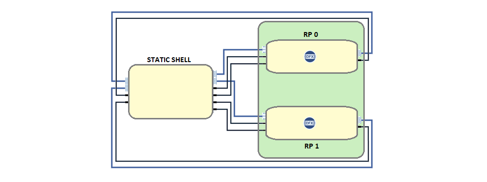

Dynamic Function eXchange (DFX)¶
The AMD-Xilinx Dynamic Function eXchange (DFX) is a technology that enables an incremental and partitioned hardware configuration of a programmable device. Details on DFX capabilities within the Vivado tool are available at this link. In PL/FPGA based DFX this enables a concept of reconfigurable partitions (RP) and reconfigurable modules (RM). The RP provides a pre-provisioned HW space allocation within which different RMs can be loaded dynamically. The system and solution capabilities of the DFX incremental HW configuration enable:
Partitioned designs allowing one part of the system to be changed (reconfigured) while another part of the system remains running.
Slotted architecture allowing for dynamically composable HW systems without having to recompile a monolithic configuration bitstream file.
Decoupled life cycles for PL based functions, facilitating a reconfigurable module (RM) to be deployed to the field later without having to update or rebuild the base platform design.
The Kria example DFX design demonstrates the implementation of a single slot (1 RP) and a dual slot (2 RP) design with multiple dynamic PL accelerated functions. In the Kria design the RP slots are homogenous in footprint allowing for any of the accelerated libraries to be loaded to any slot. In the 2-slot reference design this provides an ability to dynamically compose any combination of PL accelerated functions based on the needs of the user without having to recompile the PL design.
Kria DFX Hardware Design¶
The Kria DFX shell uses a Xilinx solution called DFX, which allows for the reconfiguration of modules within an active design. Using DFX, the shell is carved into a static region and DFX regions called reconfigurable partitions(RP). The RP region(s) of the fabric can be dynamically reprogrammed with different functions, called reconfigurable modules(RMs), while the static region of the design cannot be modified or reprogrammed. A DFX region is carved out by drawing pblocks in Vivado.
The static region hosts the infrastructure blocks like PS, VCU, interconnect, reset, clocking, DFX decouplers, and platform management IPs. The reconfigurable partitions are used to host the accelerators, where each RP can run an accelerator. The static region acts as a bridge for accelerators to access PS resources. The RPs are carved out such that they are all homogeneous i.e., they have similar area and the same number of logic resources.
The Vivado design uses Block Design Container(BDC), which allows one or more block designs(BDs) to be instantiated inside another block design. The number of BDCs depend on the number of reconfigurable partitions in the design, having a 1:1 correspondence.
When DFX is enabled on a BDC, the interface of all the BDs added to that BDC must be identical. A BD should be built for each RM and added to BDC. The Kria DFX shell consists of 2 reconfigurable paritions, hence 2 BDCs in the vivado design.
When the design is built in Vivado, the following bit files will be built:
Full bitstream: Bit file for the entire design, consisting of static and the reconfigurable modules.
Partial Bitstreams: One partial bit file for every RM BD added to each BDC.
Orchestration of Dynamically interchangeable Accelerators on K26 board¶
The Kria example DFX design demonstrates the implementation of a single slot (1 RP) and a dual slot (2 RP) design with multiple dynamic PL accelerated functions. In the Kria design the RP “slots” are homogenous in footprint allowing for any of the accelerated libraries to be loaded to any slot. In the 2-slot reference design this provides an ability to dynamically compose any combination of PL accelerated functions based on the needs of the user without having to recompile the PL design.
Pre-Built Kria DFX Applications for KR260 and KV260¶
Pre-Built Kria DFX Applications for KR260 and KV260
Detailed description of Applications is available at
Applications that can run on both KR260 and KV260 : AES128,AES192,FFT and FIR * AES128/AES192 application takes a set of data that is moved over to the AES128/AES192 accelerator. This data is first decrypted on the hardware and the data is sent back from the accelerator which is then compared to a golden reference. * FFT application uses XFFT IP as a building block and creates a high throughput design catering to 1gsps sample rate. 4 similar IPs are combined together and wrapped with HLS data mover to achieve the high bandwidth. * FIR application tests Finite Impulse Response digital filter used in DSP applications. Applications that are specific to KV260 : DPU and PP_PIPELINE * TBD: Add Description
Xilinx Support¶
GitHub issues will be used for tracking requests and bugs. For questions, go to forums.xilinx.com.
License¶
Licensed under the Apache License, Version 2.0 (the “License”); you may not use this file except in compliance with the License.
You may obtain a copy of the License at apache.org/licenses/LICENSE-2.0.
Unless required by applicable law or agreed to in writing, software distributed under the License is distributed on an “AS IS” BASIS, WITHOUT WARRANTIES OR CONDITIONS OF ANY KIND, either express or implied. See the License for the specific language governing permissions and limitations under the License.